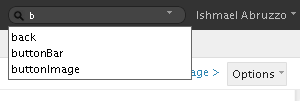
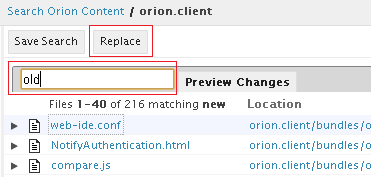
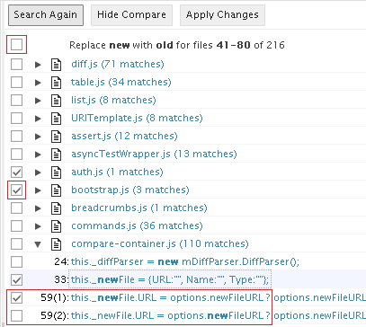
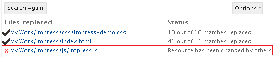

Navigating and searching
Searching for files
Type Ctrl+Shift+F to search for a file with a given name. Clicking a match will open a page for the file as if you had clicked it in the Navigator folder list. In many cases, this opens the
Coding page on that file. If there is only a single match, simply press 'Enter' to open that file.
Searching for text within files
Type search terms in the search box in the upper right corner of the title area of any page to search for terms across all files in the folder you are viewing. Matches will be displayed in the
Search Results page.
Both literal and wild card search are supported. For example, "fo*ar" will hit all the files containing "foobar" while "fo??ar" will hit the same files. Please also note that the search ignores case.

The drop-down menu next to the search bar allows you to configure search options, and browse recent or saved searches.
Read the
Search Results page documentation for more details on how to browse, filter, and process search results.
Search and replace across files
- Enter the search term to be replaced in the global search bar on any page.
- In the
Search Results page, click on Replace on the tool bar to bring up the slide out.

- Type the replacing string and press Preview Changes. You can also press Enter to replace without preview, or press Esc to cancel the replace.
- Browse the changes, and use the check boxes to select the files and matches you want to replace. Note that if there are multiple matches in a single line, it will be split to multiple lines where each line represents one match. There are 3 levels of check box.

- Overall: this allows you to toggle all the files and matches on the current page.
- File level: this allows you to toggle all the matches in a file.
- Match level: this allows you to toggle each match.
- Once you have selected all the matches that you want to replace, click on Commit on the tool bar. This will write all the replacement on the server.
- After the changes are committed, the replace page displays a list of files indicating the success or failure of the replacement. It also reports on how many matches were replaced on each file. You can click on any file to see the new content in a new tab. If some body else has changed the same file while you are replacing, a failure is generated and you have to refresh the page to redo it.

- If there is more than one page of search results, click on Next Page or Previous Page to repeat the process on the next set of results.
Example: refactor a function name
Lets say there is a function called foo that is used in 60 files. User A creates a new function called bar and wants to replace the function name in 5 files. Meanwhile, user B modified and saved one of the files. The steps below describes the complete workflow:
- User A searches on keyword foo. In the first result page, there are 3 files that user A wants to replace.
- User A clicks on Replace and types bar and presses Enter.
- User A selects the 3 files and relative matches that will be replaced.
- User A compares and confirms the differences between the original and replaced lines.
- User A commits the new contents of the 3 files to the server.
- All the 3 files are written successfully indicated by the report.
- User A replaces the next page by selecting the remaining 2 files and relative matches.
- User B modifies one of the 2 files and saves it.
- User A commits the replacement.
- One of the 2 files is reported written failure because it was modified during the replacing.
- User A refreshes the page and replaces the failed file again.
- User A commits the replacement successfully.
- Optional: To undo the changes, user A
checks out the changes in git status page.
Updating this document
This document is maintained in a collaborative wiki. If you wish to update or modify this document please visit
http://wiki.eclipse.org/Orion/Documentation/User_Guide/Tasks/Navigating_and_searching